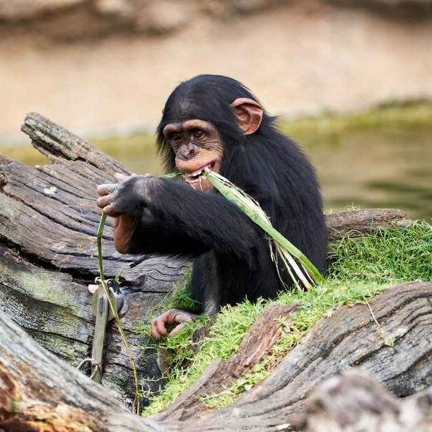

Rapport vétérinaire
Coco, le Chimpanzé
Coco est un chimpanzé espiègle et curieux, connu pour sa grande intelligence et son comportement social. Dans son habitat naturel, Coco vit en groupes familiaux dans les forêts tropicales d'Afrique. Les chimpanzés sont capables d'utiliser des outils et de résoudre des problèmes complexes, ce qui les rend fascinants à observer. Dans le domaine Tropicalia, Coco se balance joyeusement entre les arbres et interagit avec ses compagnons de manière ludique.
- Ordre: Primates
- Espèce:Pan troglodytes
- Habitat:Tropicalia